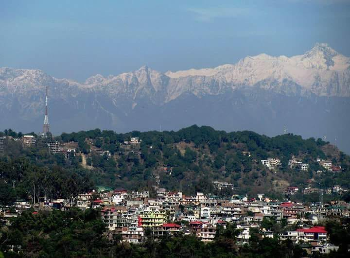

📚 About Himachal Pradesh Technical University
Overview

Himachal Pradesh Technical University (HPTU), established by the Government of Himachal Pradesh in the year 2010 under the state legislative Act-16 of 2010, is a premier state university dedicated to excellence in technical and professional education, research, and innovation. The university offers a wide range of undergraduate and postgraduate programs across disciplines including Engineering, Management, Pharmacy, Computer Applications, and Allied Sciences. HPTU is committed to bridging the gap between academia and industry by focusing on outcome-based learning, practical exposure, skill development, and research-driven education. Nestled amidst the serene and scenic Shivalik ranges, the university campus at Hamirpur provides a vibrant and peaceful environment that fosters creativity, discipline, and holistic development among students. Hamirpur, popularly known as "Veer Bhoomi" for its proud contribution to the defence services, is one of the most literate and well-connected districts of Himachal Pradesh, making it an ideal location for higher learning.
History
Himachal Pradesh Technical University, earlier known as HimTU, was established with the vision to centralize and upgrade technical education in the state. The Himachal Pradesh Technical University Act, 2010 received the Governor's assent on 28th July 2010 and came into force on 21st August 2010. Initially, the university operated from a temporary campus and affiliated various technical and professional institutions across the state. In a major milestone, in August 2020, HPTU shifted to its newly constructed, state-of-the-art permanent campus at Daruhi village in Hamirpur District. The new campus is equipped with modern infrastructure, smart classrooms, advanced laboratories, libraries, and hostels, providing students with world-class facilities for learning and research. Since its inception, HPTU has played a crucial role in shaping the technical education landscape of Himachal Pradesh and producing industry-ready graduates.
Goals & Vision
The primary goal of HPTU is to provide high-quality, learner-centric, and industry-relevant technical education that prepares students to meet the challenges of the modern world. The university strongly promotes a culture of research and innovation among both faculty and students, encouraging them to take up projects that solve real-world problems. HPTU aims to build strong collaborations with industries, academic institutions, research organizations, and international partners to ensure that the curriculum remains updated and students get ample opportunities for internships, placements, and exposure. Beyond academics, the university is committed to the holistic development of learners by nurturing their creativity, communication skills, leadership qualities, and ethical values. HPTU also focuses on continuous infrastructure and resource development to provide a supportive learning environment. The university believes in knowledge transfer and societal contribution by engaging in community development programs and extension activities. With a global outlook and focus on national integration, HPTU strives to produce professionals who are not only technically sound but also socially responsible citizens.
About Hamirpur City

Hamirpur is a beautiful district situated in the heart of Himachal Pradesh and is famously known as "Veer Bhoomi" due to the large number of defence personnel it has produced over the years. Surrounded by gentle Shivalik hills and blessed with a moderate climate throughout the year, Hamirpur offers a perfect blend of natural beauty and urban convenience. The city has rapidly emerged as a major educational hub of North India. It is home to prestigious institutions like the National Institute of Technology (NIT) Hamirpur, Institute of Hotel Management (IHM) Hamirpur, Himachal Pradesh Technical University (HPTU), Government Medical College Hamirpur, and Himachal Pradesh Krishi Vishwavidyalaya campus. With excellent road connectivity to Shimla, Chandigarh, Dharamshala, and Delhi, Hamirpur is easily accessible. The district is also known for its high literacy rate, peaceful environment, and disciplined culture, making it one of the most preferred destinations for students pursuing technical and professional education.
← Back to Home